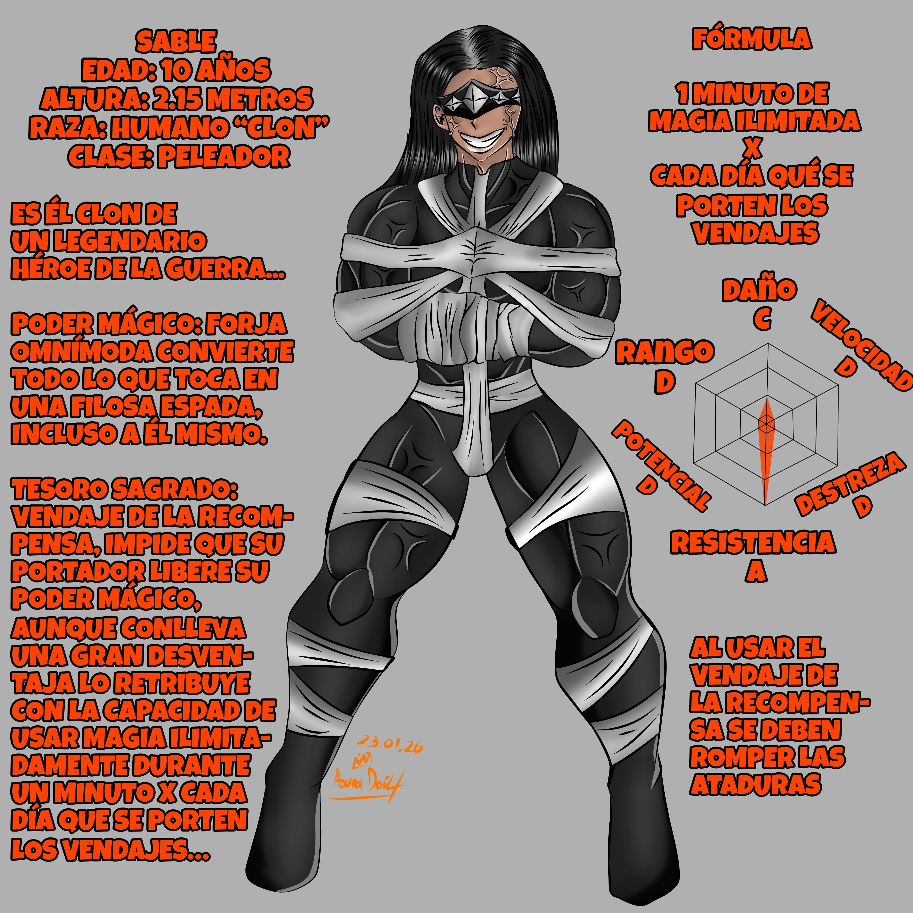
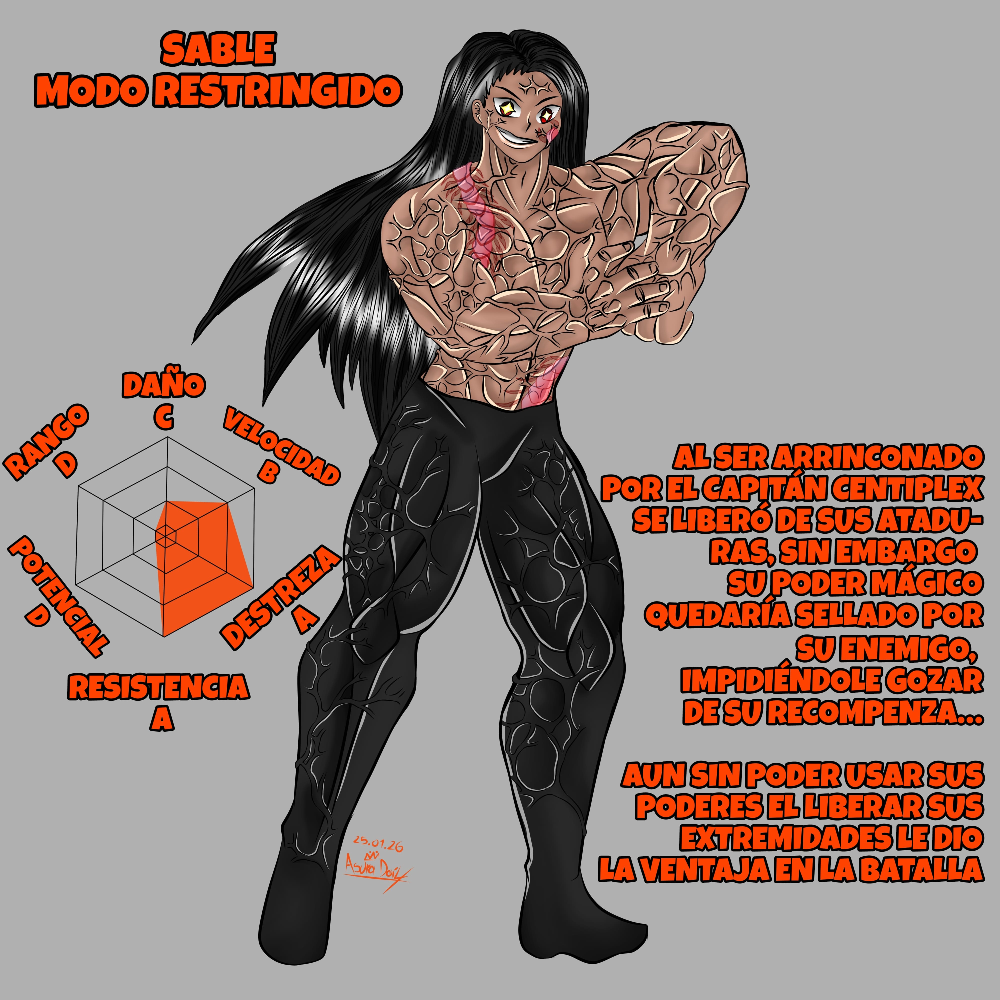
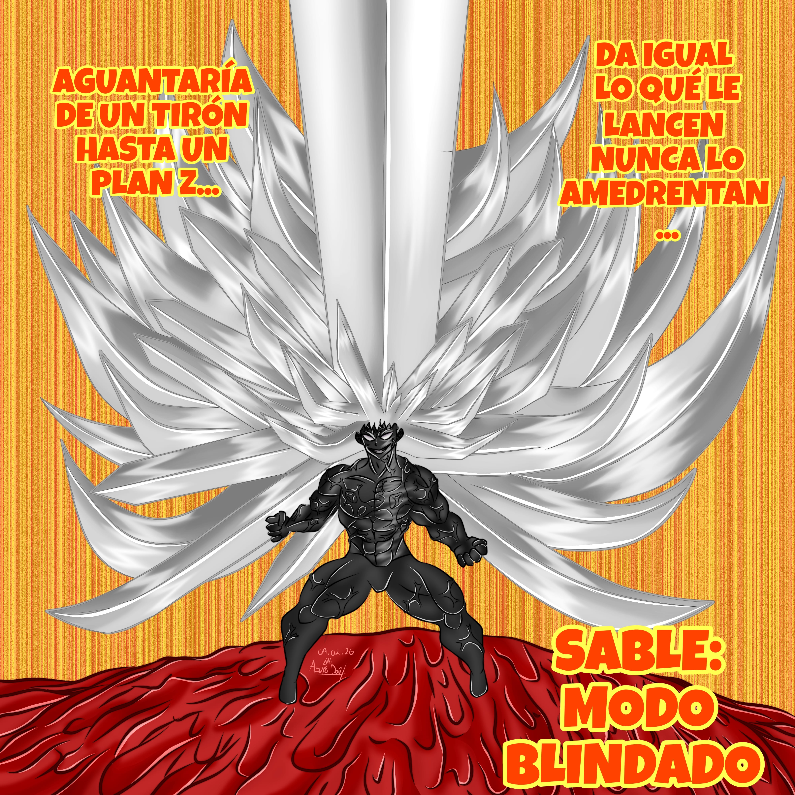
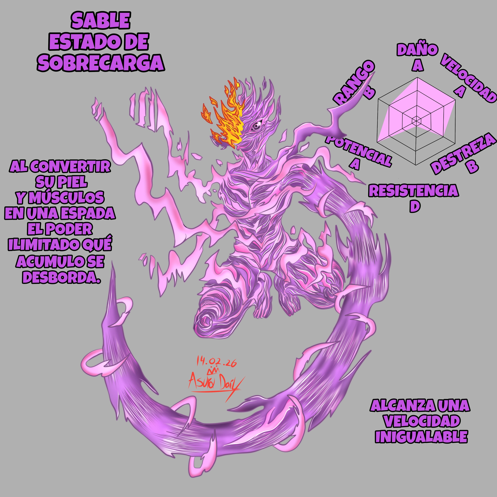

Líder del grupo criminal más poderoso y el usuario mágico más fuerte
del planeta sin leyes. Es un clon de un héroe del pasado, Su origen se
remonta a un intento de asesinato contra el presidente de la Ciudad de
los Guerreros, ejecutado por un escuadrón de clones. El plan fracasó,
y Sable fue el único superviviente. Lejos de abandonar ese objetivo,
decidió perfeccionarlo. Reunió a 72 usuarios mágicos de renombre y desató
una guerra entre las facciones criminales que dominaban el planeta sin
leyes. En el proceso, forjó una alianza con el Titán Forajido, quien también
ambicionaba la cabeza del presidente.
Para tomar el control del planeta liberaría los residuos de los Perpetuos
desatando el caos. Cuando su magia residual se liberó en el planeta sin leyes,
todos aquellos que no poseían habilidades mágicas se quitaron la vida… para
levantarse inmediatamente como Perpetuos y seguir esparciendo muerte. Lo aterrador
es que incluso organismos sin magia, al transformarse en Perpetuos, alcanzan el
nivel de un usuario mágico. A eso se suma su durabilidad: pueden seguir luchando
aunque su cuerpo este destrozado, y modificar su forma base para potenciar sus
talentos.
Esta amenaza le permitió llegar al núcleo del planeta y apropiarse de la
sala de control, como tal el planeta es una super estructura colosal de
superaleación móvil: un orbe con un radio de 200 UA (Unidades astronómicas)
—casi 30 mil millones de kilómetros— cuya superficie equivale a 22 mil millones
de Tierras. Allí habitan cerca de 10²⁶ almas, aunque solo una de cada 10,000
posee magia. Y fue esa desventaja la que desató la epidemia: en un instante,
el mundo se volvió un océano de cadáveres alzados, dispuestos a formar monstruos
inimaginables.
Con el planeta bajo su mando pondría dirección hacia la ciudad de los guerreros
para cumplir con su objetivo buscaba colisionar el planeta sin leyes
con la ciudad para borrar de la existencia de cualquier aliado o recurso de su
objetivo, a la vez que evitaba que la epidemia de perpetuos se volviera imparable.
Consciente de que quizá el impacto no fuera suficiente para acabar con su enemigo,
porto por 7 años el vendaje de la recompensa lo que le dotaba de unas 42 horas de
magia ilimitada, el viaje desde la ubicación del planeta sin leyes hasta
la ciudad de los guerreros era de una semana por lo que tendría que
ser protegido por sus aliados en la conquista del planeta, lo cual les tomaría 91
horas y solo 6 de los 72 integrantes de la banda lograron llegar hasta la sala de
control.
Aunque su gente había logrado escoltarlo con éxito hasta las entrañas del planeta,
una teniente de la O.R.D.E.N conseguiría seguirlos hasta el final y
aunque sería superada en combate conseguiría pasar la antorcha de detener los
planes de Sable a un equipo de élite que conseguiría interceptar al planeta sin
leyes a medio camino. Al abordar la superestructura les tomaría 3 días destruir
los escudos del planeta que le protegían del borrado existencial de su base y
con el objetivo de borrar el proyectil planetario se enfrentarían a los peligros
del planeta, perpetuos y remanentes de las bandas criminales hasta llegar a la
sala de control donde se enfrentarían a Sable.
El capitán Centiplex conseguiría arrinconar a Sable a tan solo
12 horas de llegar a su objetivo y a 5 minutos de ser borrados por la O.R.D.E.N
Sable se vería obligado a despojarse de sus vendajes de la recompensa antes de lo previsto
sin embargo sus poderes fueron sellados por la magia del capitán lo que le costaría
24 horas de magia ilimitada Aun así, mediante engaños, Sable logró liberarse:
convenció a su enemigo de que podía traer de vuelta a la teniente caída. Aunque
su treta fue efectiva y se alzaría con la victoria su celebración apenas duraría
pues Invicto llegaría a tiempo
para desafiarlo a un duelo a muerte.
Lo que siguió fue un duelo sin odio ni rencor: dos hombres enfrentándose
únicamente para medir la magnitud de sus fuerzas.
Su poder le permite convertir en espadas todo aquello que toque, incluso
su propio cuerpo. Lo que convierte en espadas no puede recuperar su forma
original. Su técnica más poderosa es la “Espada global” consiste en
materializar una espada equivalente a una centésima del radio del planeta
en el que se despliega con la que realiza un hechizo que parte el mundo
en dos si logra descender la colosal cuchilla. Al intercambiar ataques
contra Invicto y con la amenaza del borrado universal de la O.R.D.E.N
recurre a esta letal técnica colisionando con la liberación de Invicto.